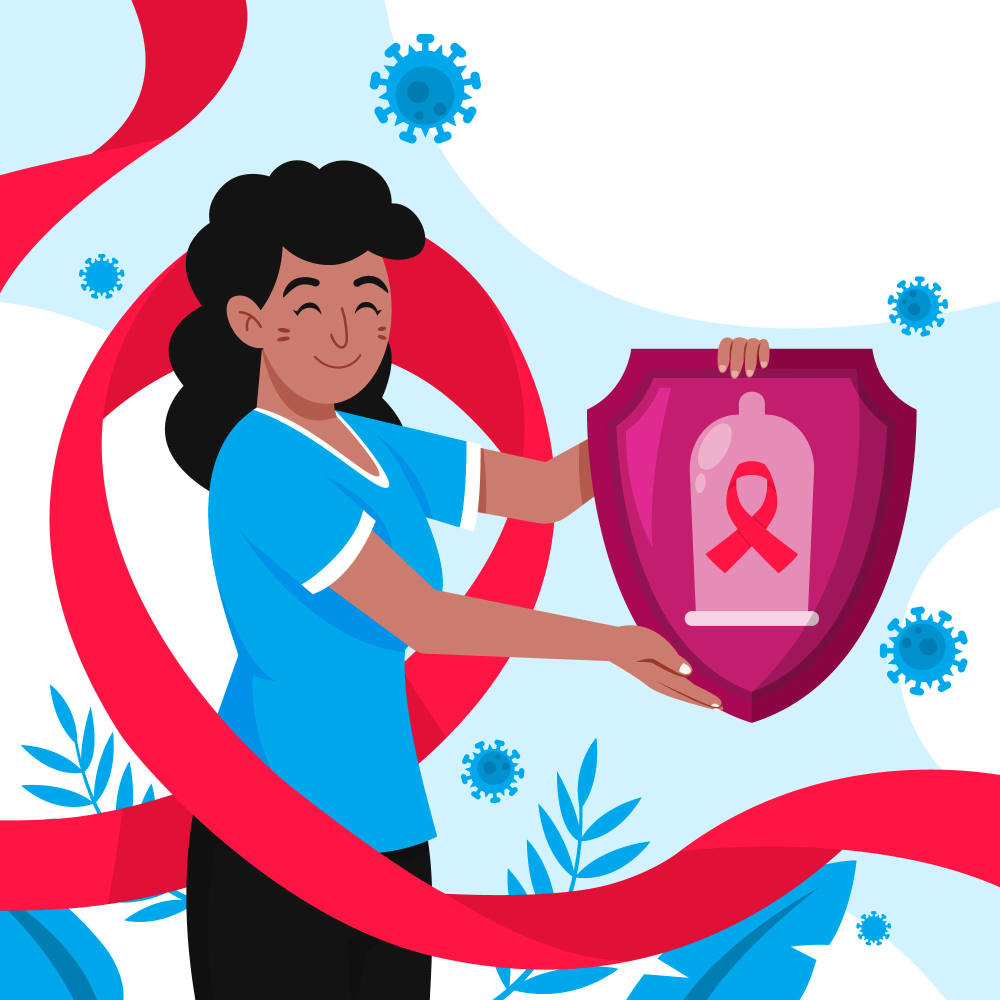

LE PRÉSERVATIF, PREMIER MOYEN DE PROTECTION
Le préservatif n’a pas toujours bonne presse. « Il me serre trop », « il m’empêche d’avoir une érection », « c’est un tue-l ’amour ». Pourtant, qu’il soit externe ou interne, il constitue une barrière efficace contre la plupart des IST.
PREP, TASP, VACCINATION
Au cours des années, le préservatif n’est plus resté le seul moyen de protection. Pour le VIH, la Prophylaxie Pré-Exposition (PrEP) est un outil précieux. Elle consiste pour une personne séronégative à prendre un médicament de manière préventive afin d’éviter une contamination. Il existe aussi le TasP pour treatment as prevention. Chez une personne vivant avec le VIH, le fait de bénéficier d'un traitement efficace permet d’avoir une quantité extrêmement faible de virus dans l’organisme, ce qui empêche de contaminer un.e partenaire lors d’un rapport sexuel non protégé par un préservatif. Pour l’hépatite B, un vaccin existe, mais ce n’est pas encore le cas pour l’hépatite C ni pour le VIH.
PRISE DE RISQUE, SYMPTÔMES, TRAITEMENT
Après un rapport sexuel avec un.e partenaire infecté.e par une IST, des signes peuvent se manifester :
- Écoulements au niveau du pénis, du vagin ou de l’anus
- Sensations de brûlure en urinant
- Démangeaisons au niveau des organes génitaux
- Douleurs au niveau des organes génitaux et/ou douleurs abdominales
- Urines plus foncées, teint jaune...
Il est aussi possible d’être infecté.e sans que des symptômes apparaissent. En cas de doute sur une éventuelle prise de risque, mieux vaut appeler Sida Info Service pour faire le point avec un écoutant, ou consulter un médecin qui vous proposera de réaliser éventuellement un test de dépistage
PROTÉGER AUSSI LES AUTRES
Dans la mesure du possible, si vous avez gardé contact avec votre ou vos partenaires, prévenez-les de votre situation. Ainsi ils et elles pourront aller se faire dépister, se faire traiter et rompre ainsi la chaine de la contamination. Se protéger soi, c’est aussi protéger les autres.